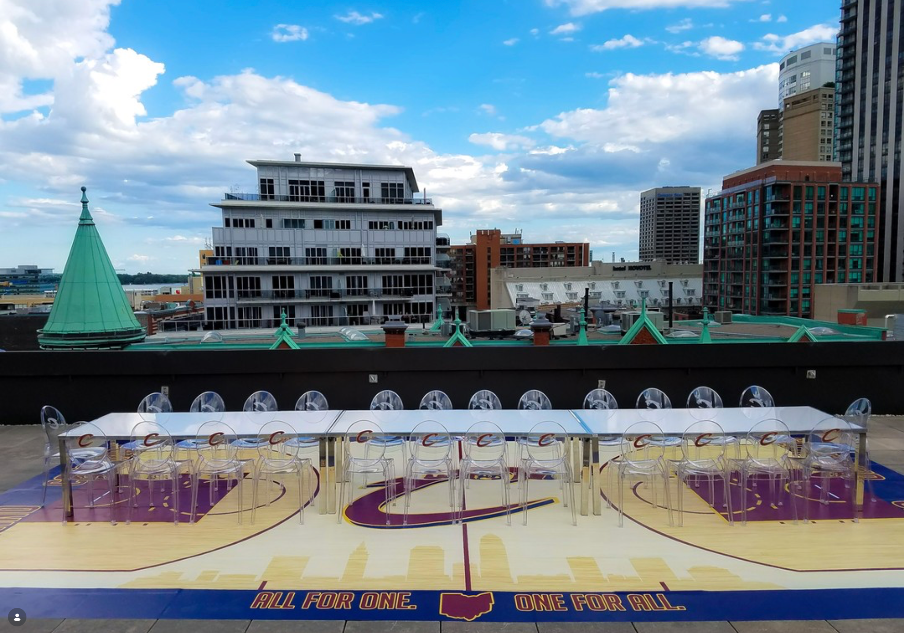
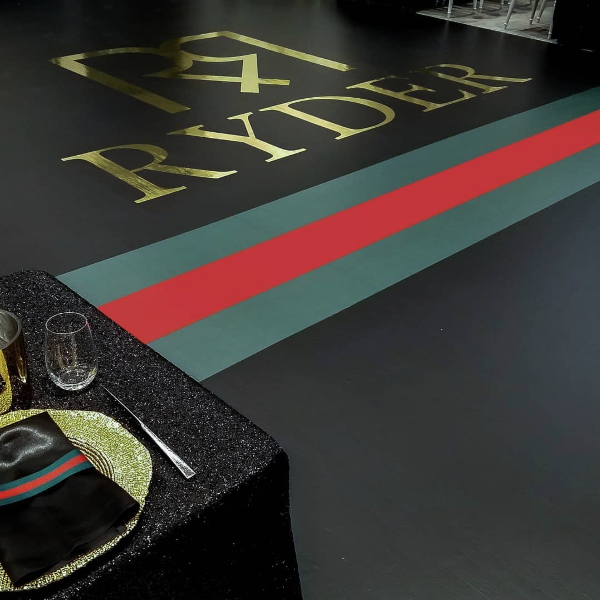
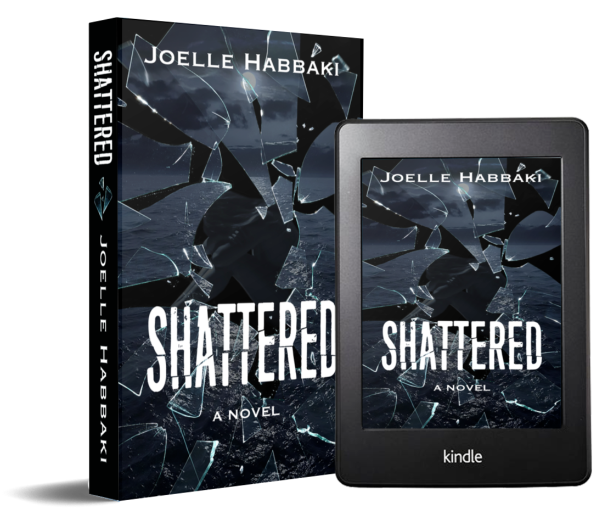
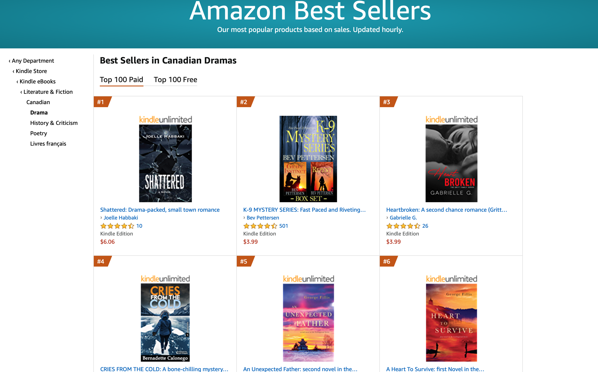
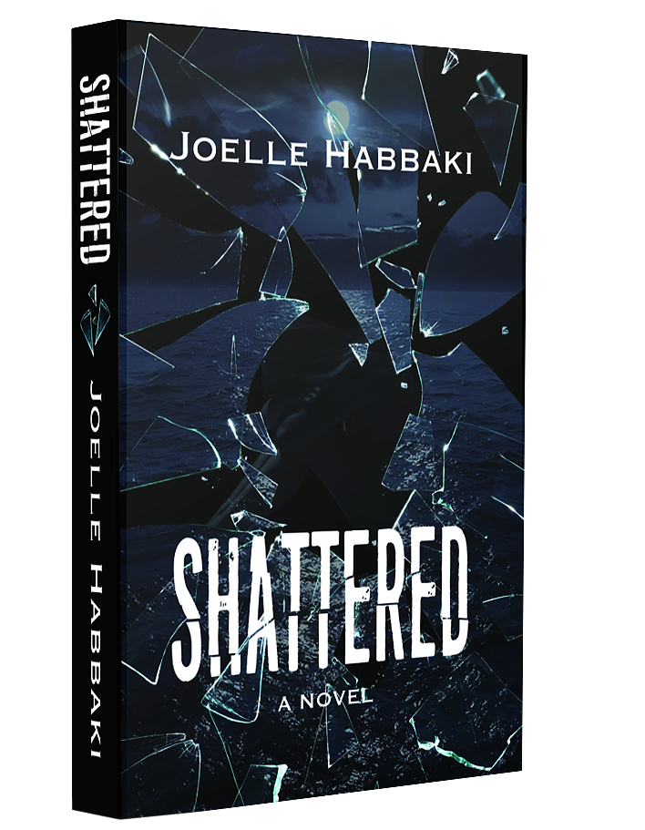
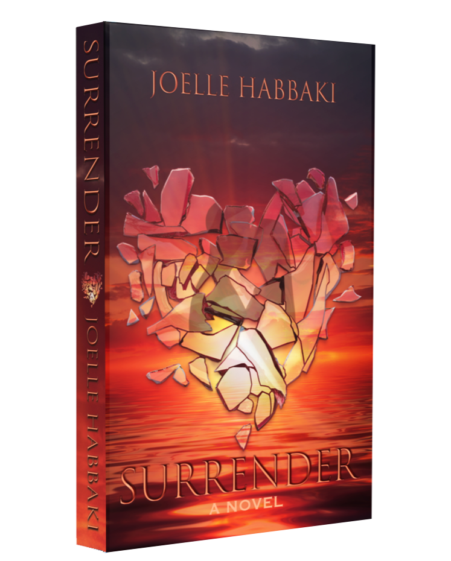
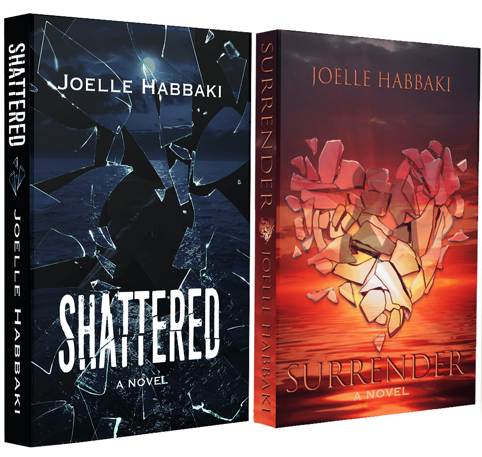

Mobirise.comWhy Shattered and Surrender belong at Resilient Heart Press.
When Resilient Heart Press was established as the publishing home of Love Lies, bringing Shattered and Surrender under the same imprint felt less like adding two titles to a catalogue and more like bringing the books that started everything home.
For Joelle Habbaki, the St. Austell Duet carries a history that reaches back well before the press existed. All the way back to a thriving event-design career, an unfinished manuscript that refused to be forgotten, and the unexpected period of stillness that finally gave her the time to finish it.
For years, Habbaki’s creative energy had another outlet. She built and ran Finer Events, designing and producing weddings, corporate events and elaborate themed environments. The work was visual, demanding and deeply creative. It also left very little unused time.
Writing remained somewhere in the background. There was an unfinished novel and, with it, a thought that kept resurfacing no matter how effectively it was pushed aside: finish writing that novel.
It was easy enough to ignore while events were being designed, clients were calling and production schedules were full. Until suddenly they weren’t.


When COVID-19 brought live events to a halt in 2020, the industry that had occupied so much of Habbaki’s professional life effectively stopped with it.
For the first time in years, there was time. And with that time came a question she had never really allowed herself to answer: could she actually write a full-length novel?
Not begin one. Not imagine one. Not return to it when life permitted. Finish one.
There was another question underneath it: if she did finish the book, would she discover that writing was something she genuinely wanted to do every day?
She opened the manuscript. And kept going.

During a period when there was almost nowhere to be, Habbaki began getting up while the house was still quiet to write. There was no professional obligation behind those early mornings. No deadline imposed by a publisher. She simply couldn’t wait to continue.
Chapter by chapter, the experiment became a novel. By the time the manuscript was complete, Shattered had grown to 495 pages. But the story still had more to give.
Completing the manuscript also introduced an entirely different challenge: turning it into an actual book. Habbaki self-published Shattered, taking on not only the writing but much of the creative work surrounding its release, including its original cover.
The fractured-glass concept required hours of meticulous Photoshop work: tracing individual pieces, positioning them, blending them and refining the composition until the image resembled what she had been carrying in her imagination.
A celebration of the moment Shattered became a published book.
A finished copy existed. Her name was printed across its cover. The story that had lived unfinished for so long could now be held in her hands.
Holding the first published copy of Shattered brought a particular kind of disbelief. The project that had begun as a private test — Can I really do this? — was no longer private, hypothetical or unfinished.
It was a book. Readers could buy it. Readers could review it. And readers did.
Not every response was glowing. That was part of the education too. But the larger response was encouraging enough to settle the question that had started the entire experiment.
She wanted to keep writing.

The early life of Shattered brought moments Habbaki had never anticipated when she first returned to that unfinished manuscript.
At one point, the novel reached #1 in Canadian Dramas on Amazon Canada, an early milestone for a debut written, designed and independently brought to market during one of the most unusual periods in recent memory.
The novel later received another form of recognition when it was Longlisted for Best Debut Romance at the 2023 Page Turner Awards.
By then, the question was no longer whether Habbaki could finish a novel. She had written another. And then another.
In August 2021, Habbaki posted something to the Finer Events account that, in retrospect, reads almost like a dividing line between two professional lives.
She thanked the vendors, clients and friends who had been part of the event company, reflected on the years she had spent creating weddings and corporate events, and explained that while she had always been creative, writing had become the passion she wanted to pursue.
During the downtime brought by the pandemic, she wrote, she had finally had the time to do it.
And then came the sentence that made the transition public: she was officially a published novelist.
At the time, there was no Resilient Heart Press. There was simply a first book, a second career beginning to take shape and the decision to see where writing might lead.
Shattered was never ultimately meant to stand alone. Its characters and emotional arc required more space than one already substantial novel could comfortably provide. Surrender became the continuation and conclusion, allowing the story to reach its ending without rushing the journey required to get there.
Together, the books became the St. Austell Duet. The story with which Habbaki entered fiction, learned the realities of publishing and discovered the kind of writer she wanted to become.


When Resilient Heart Press was established as the publishing home of Love Lies, it created something that had not existed when Shattered first appeared: an author-led imprint built around the body of work Habbaki was continuing to create.
Leaving Shattered and Surrender outside that home made little sense.
They were not simply older titles being added to a catalogue. They were the beginning of the catalogue’s story.
Shattered was the book that answered a question Habbaki had postponed for years. Surrender completed the story that first taught her what it meant to stay with characters across hundreds of pages and follow them to the ending they required.
Together, the books represent the point at which writing stopped being something she intended to do and became the work she actually did.
Bringing the St. Austell Duet under Resilient Heart Press gives those books a home shaped by everything Habbaki has learned as an author and publisher since their original release.
“Before there was Resilient Heart Press, there was Shattered. And before Shattered, there was simply a question: what would happen if she finally finished writing that book?”

Five years after Shattered first became a published novel, its importance to Resilient Heart Press is not difficult to trace.
One book led to its sequel. Writing one novel led to writing more. A career that had existed as a persistent possibility became a profession. And eventually, the work created the need for a publishing home of its own.
The St. Austell Duet now sits within Resilient Heart Press not because it happens to share an author with the press’s newer titles, but because it occupies a foundational place in the story behind them.
It began before the imprint. In many ways, it helped lead to it.
And now it has come home.
Mobirise.com